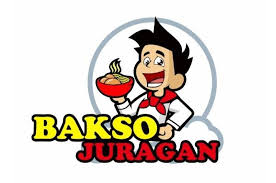

Menyajikan Cita Rasa Tradisional
kami berfokus pada penyajian makanan tradisional indonesia dengan sentuhan modern. Mengutamakan rasa, kualitas, dan pelayanan terbaik untuk pelanggan kami.
Hidangan tradisional, bakso
es teh, es jeruk, jeruk panas, teh panas dan minuman segar lainnya.
Bakso Juragan berdiri sejak tahun 2018 dengan visi menjadi restoran lokal dengan cita rasa internasional. Kami percaya bahwa makanan bukan hanya kebutuhan, tetapi juga pengalaman budaya.
Email: Baksojuragan@gmail.com
Telepon: +62 821-3566-5890
Instagram: @baksojuragan